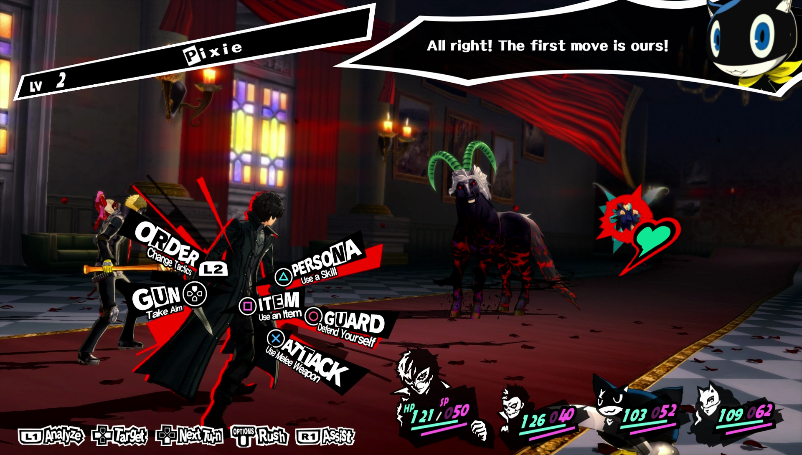

Sommaire
Qu'est-ce que Persona 5 ?
Persona 5 est un jeu vidéo de rôle développé par Atlus au Japon et aux Etats-Unis et par Deep Silver en Europe. Le jeu est sorti sur PlayStation 3 et PlayStation 4 en Septembre 2016.
C'est le 6ème opus de la série des Persona selon la chronologie de la sortie des jeux (Persona Q, un jeu sorti sur Nintendo 3DS, est le 5ème opus de la série).
Histoire du jeu
Le protagoniste est un jeune lycéen japonais qui a été accusé à tort d'une agression et condamné. Porteur d'un casier judiciaire, il est en période de probation
pendant 1 an, et pour cela, il doit déménager à Tokyo pour aller dans le seul lycée qui a accepté sa candidature, le lycée Shujin (un mot japonais qui veut dire "Prisonnier",
nom de lycée bien adapté à sa situation). C'est Sojiro Sakura, le patron du café Leblanc, qui est chargé de le loger et de
surveiller le bon déroulement de sa probation. Le protagoniste doit donc éviter tout ennui et suivre une scolarité normale de lycéen, mais néanmoins impérative pour valider sa
probation (il est juste en liberté conditionelle et sera renvoyé en prison au moindre problème qu'il causera).
Sur le chemin du lycée pour son premier jour, il fait la rencontre de Ryuji Sakamoto, un élève du même lycée, en retard.
Le héros et Ryuji prennent un raccourci dans des arrières-rues, mais finissent par tomber devant un château médiéval à l'emplacement exact où était censé se situer leur lycée.
Intrigués, les deux amis entrent à l'intérieur pour se faire capturer par Suguru Kamoshida (un ex-médaillé olympique du voleyball actuellement professeur à Shujin), déguisé en Roi
et ordonnant l'exécution immédiate des "intrus". Pendant leur fuite, ils rencontrent Morgana, un chat qui parle, qui leur explique
qu'ils ne sont pas dans le monde réel, mais dans le Metaverse : un monde parallèle où les désirs distordus sont matérialisés. Armés de Morgana et du nouveau Persona du héros
(esprit de rébellion qui sommeillait en lui), le groupe finit par sortir du château et à retourner dans le monde réel, où ils rencontrent le vrai Kamoshida (celui dans le château
n'étant que la représentation de ses désirs. Ils décident de retourner dans le Metaverse avec l'aide de Ann Takamaki,
une des victimes de Kamoshida, afin de "dérober son coeur" et le forcer à confesser ses crimes au monde entier.
Après ça, le groupe du héros, appelé les Phantom Thieves (Voleurs Fantômes en anglais), décident de dévoiler au monde les crimes des personnes
possédant un Palace tout en renforçant leur équipe au fil du jeu.
Mécaniques du jeu
Le jeu alterne entre deux phases : la vie étudiante du protagoniste et l'exploration des Palaces.
La vie étudiante
La partie la plus présente dans le jeu est la gestion de sa vie étudiante : le héros doit aller à l'école tous les jours, gérer son argent de poche, sortir avec ses amis,
ses Confidents, afin d'augmenter leurs liens et ainsi débloquer des abilités utiles pour les Palaces (abilités décrites plus tard).
Il est aussi nécessaire d'augmenter ses "social qualities" : Guts, Knowledge, Charm, Profiency et Kindness; statisiques nécessaires afin de débloquer, là aussi, des capacités
spéciales ou renforcer les liens avec ses Confidents.
Les donjons (Palaces)
Lorsque les Phantom Thieves ont trouvé une cible à "abattre", ils utilisent une application mobile de navigation afin d'accéder au Metaverse et ainsi atteindre le
Palace de la cible. Leur but est de s'infiltrer jusqu'à la salle du Trésor, clé pour dérober le coeur de la cible, tout en évitant de se faire repérer par les gardes
répondants aux noms de Shadows.
Une fois repéré, le niveau d'alerte augmente, et une fois à 100%, les héros sont éjectés du Palace. Afin de baisser ce niveau, les héros
peuvent combattre ces Shadows.
De plus, les Palaces ne sont pas le seul endroit où les héros devront combattre : il existe aussi un Palace qui regroupe la cognition de tous les habitants de Tokyo :
le Mementos. Afin de s'aventurer plus profondément dans ce Palace particulier, il est nécessaire de faire des missions secondaires (données principalement par
Yuuki Mishima mais aussi par certains Confidents dès que leur lien atteint un certain niveau) et de descendre des Palaces.
Comment marchent les combats ?

Source de l'image
Cliquez sur l'image ci-dessus pour accéder à la musique de combat
Comme dit précédemment, dans les Palaces comme dans le Mementos, les héros devront faire face à des Shadows lors de combats plus ou moins difficiles selon les membres
du groupe par exemple.
Il existe plusieurs façons d'entamer un combat :
- La première, et de loin la plus pratique, c'est d'Ambush l'ennemi : cela permet d'avoir droit à un tour gratuit où l'ennemi ne vous attaque pas, ce qui peut vous
permettre de les assomer (j'en parlerai plus tard). Pour ambush un ennemi, il faut attendre qu'il soit retourné ou qu'il vienne dans votre direction, et une fois à portée,
il suffit d'appuyer sur X.
- Une autre façon est de tout simplement foncer sur l'ennemi quand il vous regarde et appuyer sur X. Cela engage simplement un combat, sans donner ni avantage à votre
équipe, ni avantage à l'équipe adverse. C'est de cette manière que les combats contre les mini-boss, les boss ou les ennemi de l'histoire sont engagés.
- Enfin, la manière la moins cool pour vous, c'est de vous faire repérer par l'ennemi (cela augmente aussi le niveau d'alerte) et de se laisser toucher : l'ennemi passe
à son tour en phase ambush, vous entoure et attaquent tous les uns après les autres, ce qui peut être fatal si l'équipe a très peu de PVs.
Une fois engagé, le combat est un combat en tour par tour où on a plusieurs options : on peut attaquer au corps-à-corps, tirer avec une arme à feu, ou bien utiliser le pouvoir
d'un Persona ou se mettre en mode défense.
Chaque ennemi est faible ou résistant à tel ou tel pouvoir, il est donc préférable d'utiliser les pouvoirs afin d'assomer un ennemi et ainsi disposer d'un tour supplementaire.
Si vous arrivez à assomer tous les ennemis présents, vous déclenchez un Hold Up, mode très pratique dans le jeu. En effet, c'est à ce moment qu'il est possible :
- soit de faire une All-Out Attack et ainsi baisser grandement les PVs des ennemis, ou même de gagner le combat,
- soit de recruter le Persona adverse à la suite d'une discussion avec lui,
- soit de réclamer de l'argent ou un objet (il est possible d'obtenir de meilleurs objets et plus d'argent en augmentant le lien avec
Toranosuke Yoshida.
Haut de page
|
Liens utiles :
|